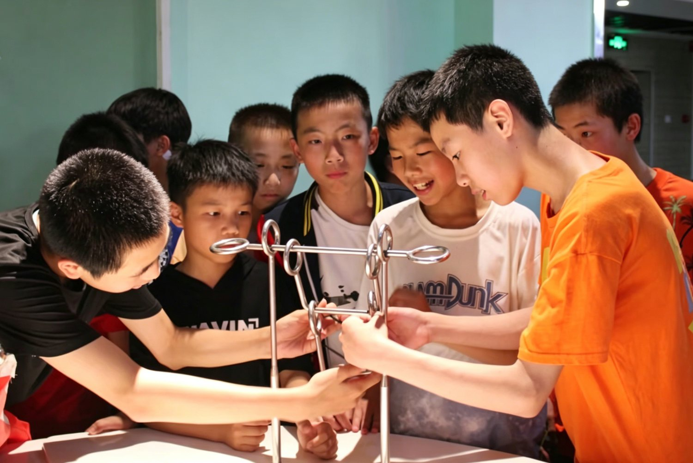
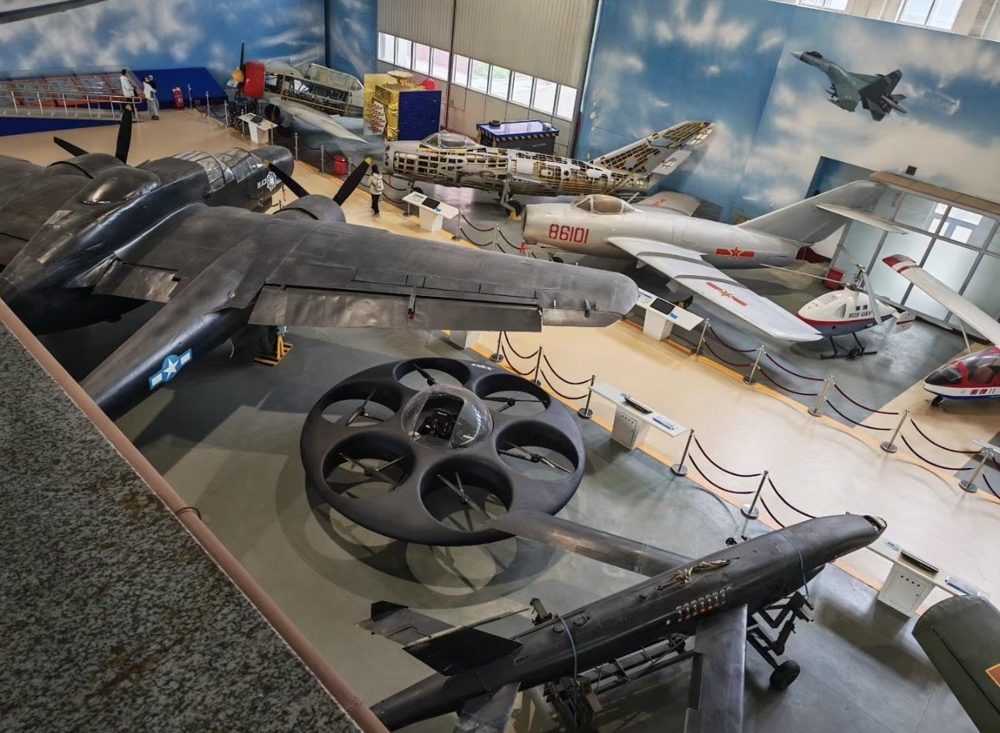

科技馆很容易让孩子兴奋，因为它有声音、灯光、按钮和互动装置。但真正好的科技馆研学，不是让孩子一路“玩过去”，而是让他们在互动之后还想继续追问：为什么会这样？原理是什么？如果换一种方式会怎样？
庐安的科技馆课程，会把“好奇”当作起点，把“解释”当作目标。孩子在展台前体验、记录、讨论，再回到小组中分享观察结果。每一次交流都不是为了比谁懂得更多，而是为了练习一种科学思维：先看见，再推测，然后验证。

科学不是背出来的，是体验出来的
很多孩子在学校里学科学时，会觉得概念抽象、公式遥远。但当他们亲手操作装置，看见力、光、声、热在眼前发生，知识就不再只是书上的字，而是可以被感知、被讨论、被拆解的现实。这样的学习，会让抽象内容和生活经验重新连接起来。

我们尤其重视孩子在过程中的语言表达。一个孩子如果能用自己的话解释“我看到什么”“我猜到了什么”“我还想再验证什么”，就说明他已经开始建立真正的科学兴趣。兴趣不是被灌进去的，而是在一次次具体体验里长出来的。
让孩子习惯提出更好的问题
科技馆研学并不急于给出标准答案。我们更希望孩子学会提出更好的问题。因为一个会提问的人，通常也更会思考、更会理解世界。课程结束后，孩子经常会追着老师问下一个问题，或者回家后继续查资料、做实验、跟家长讨论。这些动作虽然小，却说明教育真的开始往前走了。
我们相信，未来的学习力不只是知道多少知识，更是知道如何靠近未知。科技馆课程所做的，就是给孩子一个安全而充满可能性的起点。